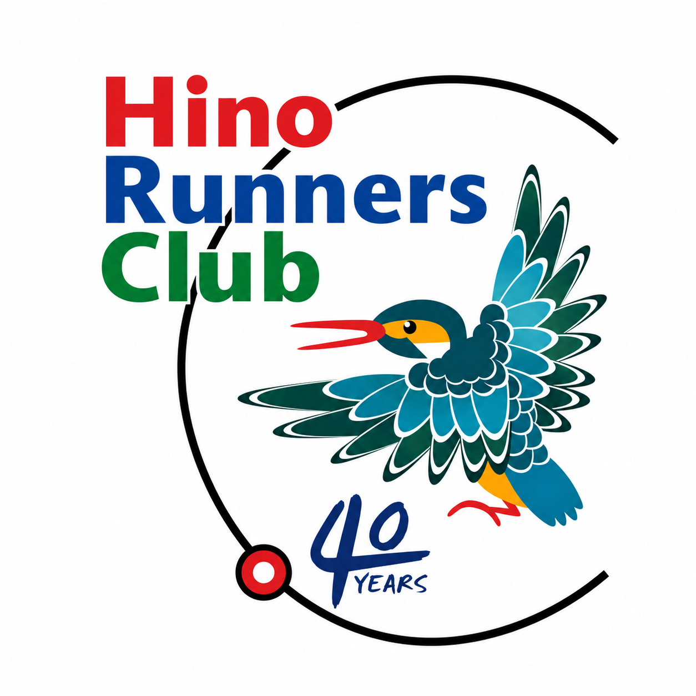

日野走友会
HRC Hino Runners Club
トップ
資料・活動記録 ▼
会を知る俯瞰記事
ブログ
活動報告
大会結果
投稿写真
大会出場予定
朝練参加者数
会報表紙ページ
歴代記録集
ランキング集
年度活動記録
会歌
沿革
募集案内 ▼
会員募集
朝練行事予定
朝練会場
朝練コース
アクセス
お問い合わせ
歴代記録集
各距離における歴代の記録一覧です。
距離
記録
会員名
大会名
フルマラソン
〇時間〇分〇秒
〇〇会員
〇〇マラソン
ハーフマラソン
〇時間〇分〇秒
〇〇会員
〇〇ハーフマラソン
10km
〇分〇秒
〇〇会員
〇〇ロードレース
※歴代記録をご提供いただければ反映します（現在はデモ表示です）。
▲
上へ